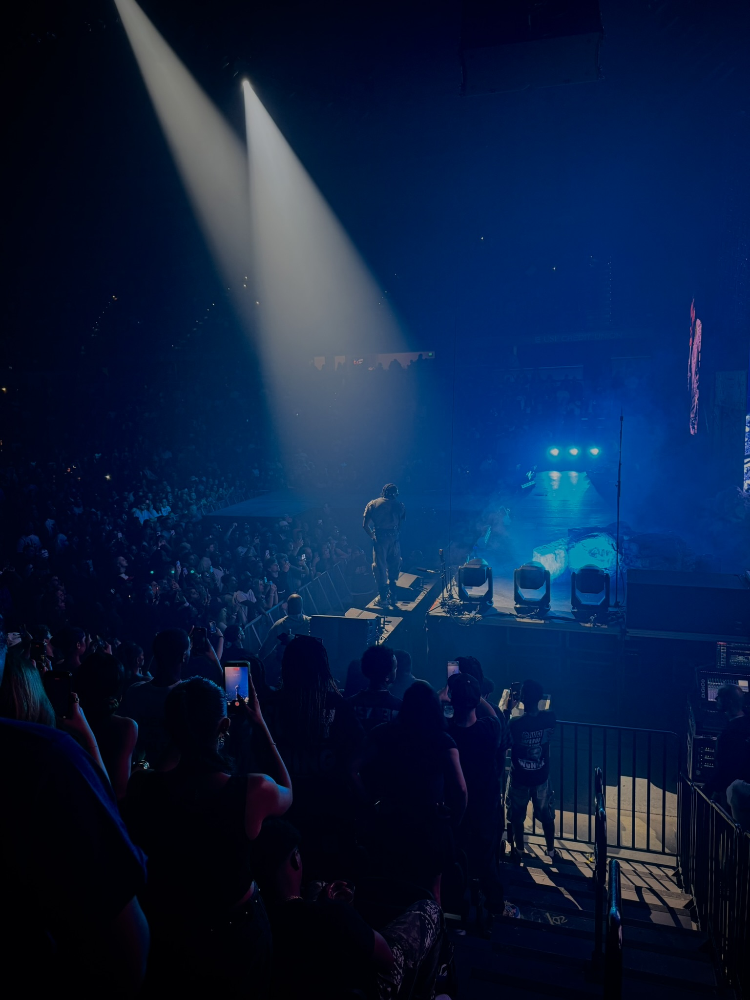

Neuroscience at FSU
Cell and molecular neuroscience, with chemistry and psychology in the mix.
Neuroscience student, clinical researcher, and the person building LifeScore into the guide I wanted earlier.
Cell and molecular neuroscience, with chemistry and psychology in the mix.
Interested in neurodegenerative disease mechanisms and precise patient-centered care.
Building toward a career where careful science and real people stay connected.
LifeScore is open to thoughtful brand partnerships, product conversations, and people with a clean, real presence for future page shoots.
For brand work, include the idea and what you want to build. For model applications, include your city, age, and a few recent photos.

Discipline is useful because it creates room for the parts you actually enjoy. Handle the basics, keep your standards, and leave space to live.